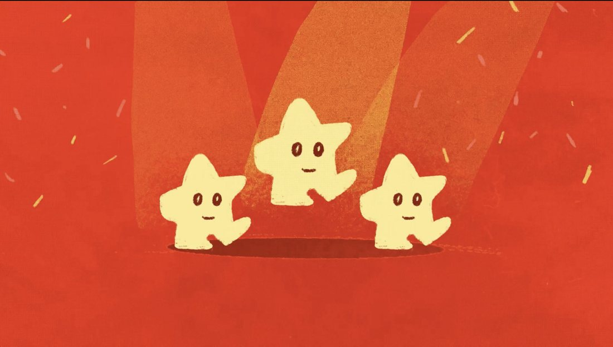
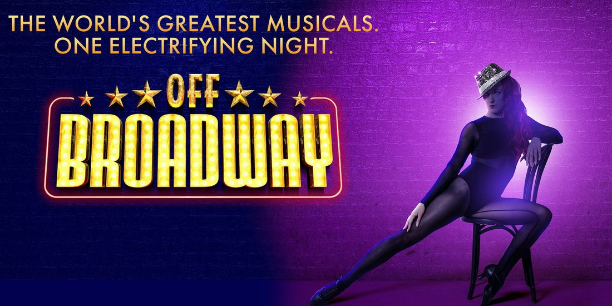

// OVERVIEW
뮤지컬 제작사 '섬으로 간 나비'의 공식 유튜브 채널을 진단하고 콘텐츠 리브랜딩을 수행했습니다. 기존 제작사(공급자) 중심의 콘텐츠 구조를, 뮤지컬 작품과 시청자(사용자) 중심의 커뮤니케이션 체계로 전환(Pivot)해 채널 아이덴티티를 재구축했습니다. 명확한 문제 정의를 바탕으로 콘텐츠 방향성과 비주얼을 전반적으로 개편하고, 브랜드 인지도 제고와 팬덤 확장을 위한 통합 마케팅 가이드를 정립했습니다.
// 수행 업무
- 채널 브랜드 진단 및 문제 정의 — 공급자 중심·정립되지 않은 방향성 식별
- 공급자 → 사용자 중심으로 콘텐츠 커뮤니케이션 체계 전환
- 'OFFOFF BROADWAY' 비주얼 아이덴티티 정립 — 네이밍·컬러·타이포·채널아트 (스튜디오 협업)
- 리브랜딩 프로젝트 관리(100%) 및 숏츠 영상 편집(100%), 통합 마케팅 가이드 정립
// 비주얼 아이덴티티

